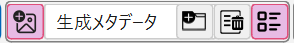
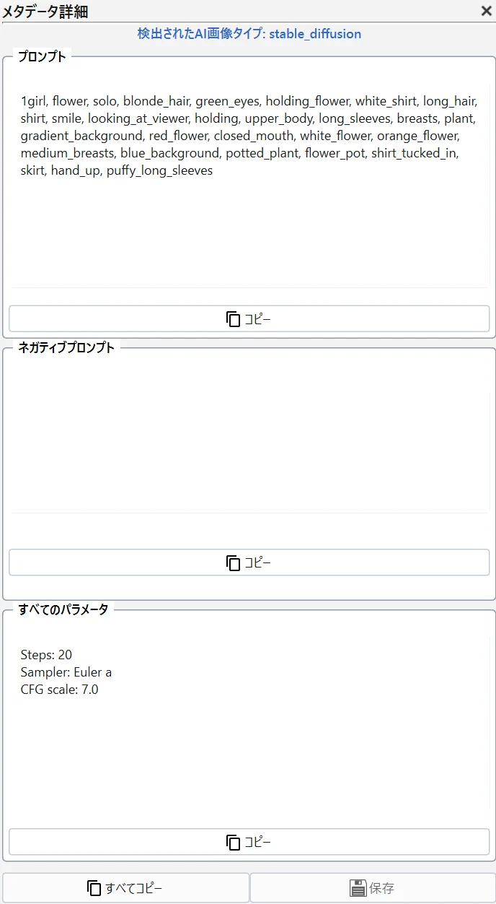

メタデータ
Stable Diffusion・ComfyUI・NovelAIなどで生成した画像に含まれるプロンプトやパラメーターを確認・編集し、公開前にまとめて削除できます。
ツールバー

12345
| 1埋め込み情報も削除 | ONにすると、NovelAIのステルス埋め込みなど画像内の埋め込み情報も削除します。 |
| 2状態 | メタデータなし／メタデータあり／生成メタデータあり を表示します。 |
| 3フォルダ | ONにして実行すると、同じフォルダの画像すべてを処理します（実行前に、上書き保存か別ファイルとして保存かを選びます）。 |
| 4削除 | メタデータを削除します。 |
| 5詳細表示 | 右のメタデータ詳細サイドバーを開閉します。 |
メタデータ詳細

1234567| 1検出されたAI画像タイプ | SD（A1111など）／ComfyUI／NovelAI を自動で判別します。ステルス埋め込みも検出します。 |
| 2プロンプト | 生成に使われたプロンプト。 |
| 3ネガティブプロンプト | |
| 4すべてのパラメータ | ステップ数・サンプラー・CFGなど。 |
| 5コピー | 各欄の内容をコピーします。 |
| 6すべてコピー | プロンプト・ネガティブ・パラメーターをまとめてコピーします。 |
| 7保存 | 編集した内容を画像に保存します。 |
- 設定で「起動時にメタデータ詳細を自動表示」をONにすると、起動時からサイドバーを表示します。
- 設定で「画像の生成情報をインペイント用プロンプトに取り込む」をONにすると、詳細・参照・NovelAIインペイントの初期値にプロンプトを使えます。